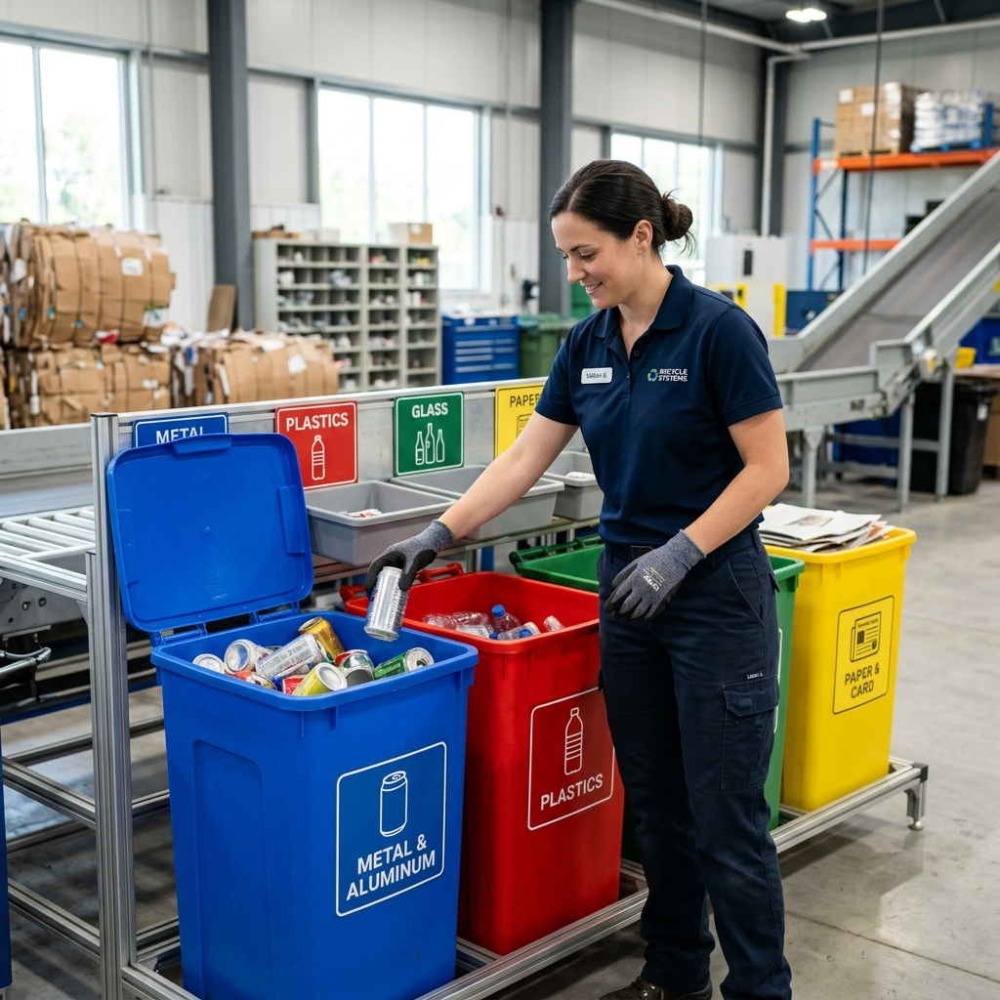
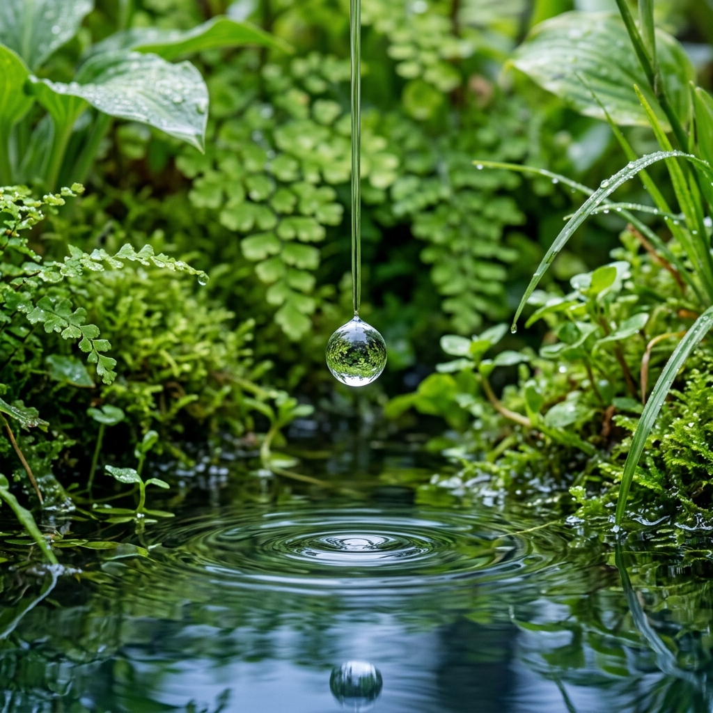
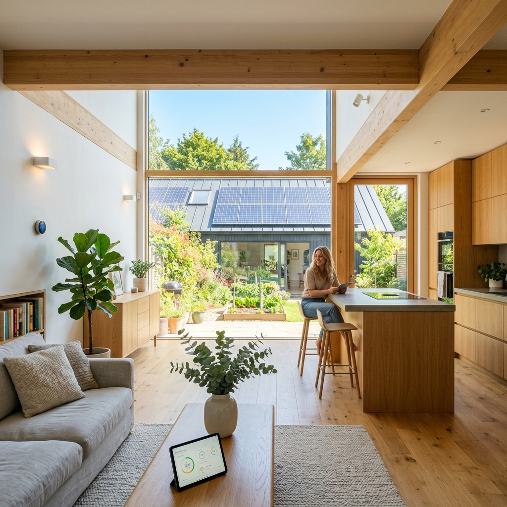
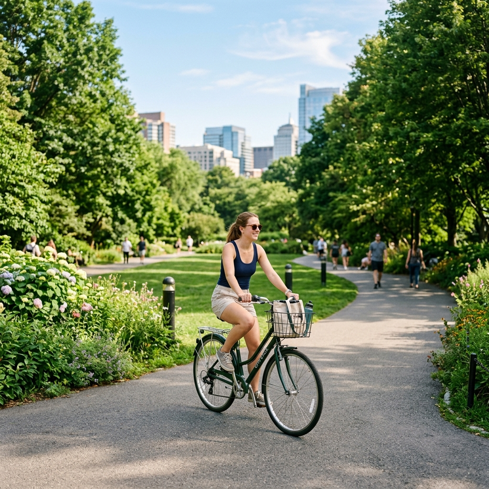

Langkah demi langkah komprehensif untuk memulai gaya hidup yang lebih ramah lingkungan.

Setiap individu menghasilkan rata-rata 0,7 kg sampah per hari. Mengelola sampah bukan sekadar membuangnya ke tempat sampah, melainkan memastikan siklus hidup material tidak merusak alam.
Plastik sekali pakai seperti sedotan, kantong kresek, dan botol air mineral membutuhkan ratusan tahun untuk terurai. Langkah nyata yang bisa Anda lakukan:
Dampak Lingkungan (Reduksi Emisi):
Memisahkan sampah adalah kunci agar material bisa didaur ulang. Biasakan memilah sampah rumah tangga menjadi 3 kategori:
Efisiensi Daur Ulang:

Hanya 1% dari total air di Bumi yang merupakan air tawar bersih yang bisa diakses. Menghemat air tidak hanya mengurangi tagihan, tetapi mencegah krisis kelangkaan air tanah.
Aktivitas sehari-hari menguras banyak air tanpa kita sadari. Lakukan optimasi berikut:
Penghematan Air Domestik:
Untuk level lanjutan, Anda bisa membuat sistem penampungan air hujan sederhana di rumah. Air hujan yang ditampung dari talang atap dapat disaring kasar dan digunakan untuk:

Pembangkit listrik masih didominasi oleh energi fosil (batu bara) yang menghasilkan emisi gas rumah kaca masif. Menghemat listrik secara langsung akan memangkas jejak karbon Anda secara signifikan.
Cabut steker dari stop kontak! Elektronik yang masih tertancap—bahkan saat dimatikan dengan *remote*—tetap mengonsumsi daya siluman (*vampire power*). Selain itu:
Potensi Penghematan Emisi CO2:

Sektor transportasi darat menyumbang porsi besar dalam polusi udara perkotaan. Mengubah cara kita berpindah tempat adalah kontribusi besar bagi kebersihan udara.
Penggunaan mobil pribadi dengan satu penumpang adalah inefisiensi ruang dan sumber daya yang besar. Solusinya:
Efektivitas Penurunan Emisi: